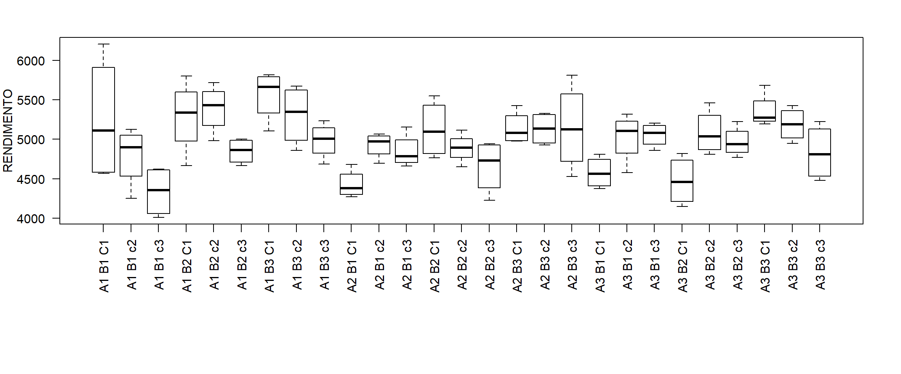
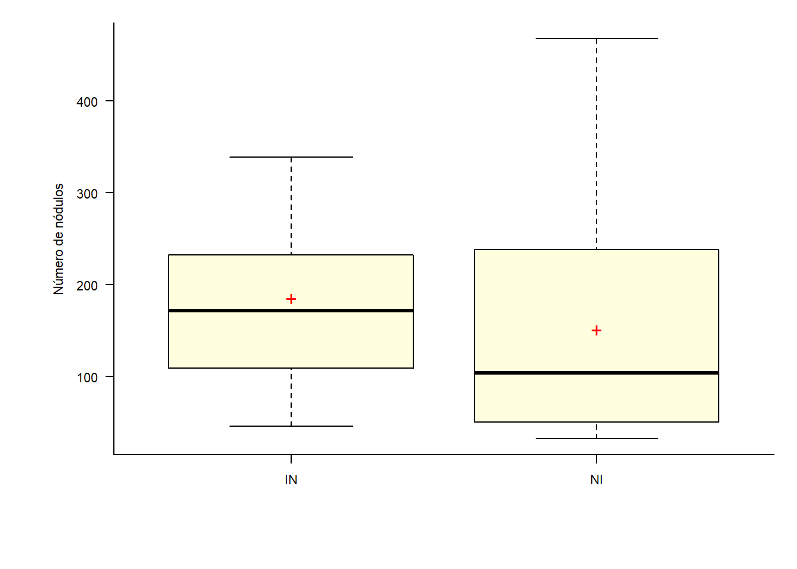

17 Esquema Fatorial (3 Fatores)
Nos experimentos mais simples comparamos níveis (tratamentos) de apenas um fator; entretanto, existem casos em que dois ou mais fatores devem ser estudados simultaneamente para que possam nos conduzir a resultados de interesse;
Em geral, os experimentos fatoriais são mais eficientes para este tipo de experimento, pois estudam, ao mesmo tempo, os efeitos de dois ou mais fatores, cada um deles com dois ou mais níveis.
O fatorial é um tipo de esquema, ou seja, uma das maneiras de organizar os tratamentos e não um tipo de delineamento;
Os experimentos fatoriais são montados segundo um tipo de delineamento experimental;
Nos experimentos fatoriais, os tratamentos são obtidos pelas combinações dos níveis dos fatores.
17.1 Tipos de efeitos avaliados
Efeito Principal: é o efeito de cada fator, independente do efeito dos outros fatores;
Efeito de Interação: é o efeito simultâneo dos fatores sobre a variável em estudo. Dizemos que ocorre interação entre os fatores quando os efeitos dos níveis de um fator são modificados pelos níveis do outro fator.
17.2 Vantagens
Pode-se estudar dois ou mais fatores num único experimento.
Pode-se, por meio dos efeitos das interações, verificar se um fator é independente ou dependente do(s) outro(s).
17.3 Desvantagens
O número de tratamentos ou combinações de níveis de fatores cresce, rapidamente, com o aumento do número de níveis, em cada fator, ou mesmo com o aumento do número de fatores.
A interpretação dos resultados se torna mais difícil é medida que aumentamos o número de níveis e de fatores no experimento.
17.4 Modelo estatístico
As observações podem ser descritas pelo modelo estatístico linear:
\(y_{ijk} = \mu+\beta_{1i}+\beta_{2j}+\beta_{3k}+(\beta_1\beta_2)_{ij}+(\beta_1\beta_3)_{ik}+(\beta_2\beta_3)_{jk}+(\beta_1\beta_2\beta_3)_{ijk}+\epsilon_{ijk}\)
- i = 1; 2; : : : ; a
- j = 1; 2; : : : ; b
- k = 1; 2; : : : ; c
em que:
- \(y_{ijk}\) é o valor observado no i-ésimo nível do fator A, j-ésima nível do fator B e k-ésimo nível do fator C;
- \(\mu\) é uma constante;
- \(\beta_{1i}\) é o efeito do i-ésimo nível do fator A;
- \(\beta_{2j}\) é o efeito do j-ésimo nível do fator B;
- \(\beta_{3k}\) é o efeito do j-ésimo nível do fator C;
- \((\beta_1\beta_2)_ij\) é o efeito da interação entre \(\beta_{1i}\) e \(\beta_{2j}\);
- \((\beta_1\beta_3)_ik\) é o efeito da interação entre \(\beta_{1i}\) e \(\beta_{3j}\);
- \((\beta_2\beta_3)_jk\) é o efeito da interação entre \(\beta_{2i}\) e \(\beta_{3j}\);
- \((\beta_1\beta_2\beta_3)_{ijk}\) é o efeito da interação entre \(\beta_{1i}\), \(\beta_{2j}\) e \(\beta_{3k}\);
- \((\epsilon)ijk\) é o componente de erro aleatório.
17.5 Hipóteses e modelo
No experimento fatorial com 3 fatores, deseja-se testar a signicância de ambos os fatores.
No experimento fatorial com 2 fatores, deseja-se testar a signicância de ambos os fatores.
Há interesse em testar hipóteses sobre a igualdade dos efeitos do fator A, isto é:
- H0 : \(\beta_{11}\) = \(\beta_{12}\) = : : : \(\beta_{1a}\) = 0
- H1 : Pelo menos um \(\beta_{1i} \neq 0\)
e a igualdade nos efeitos do fator B, ou seja:
- H0 : \(\beta_{21}\) = \(\beta_{22}\) = : : : \(\beta_{2b}\) = 0
- H1 : Pelo menos um \(\beta_{2j} \neq 0\)
e, ainda, se há interação entre os fatores A e B:
- H0 : \((\beta_1\beta_2)_{ij}\) = 0 para todo i ; j
- H1 : Pelo menos um \((\beta_1\beta_2)_{ij} \neq 0\)
e, ainda, se há interação entre os fatores A e C:
- H0 : \((\beta_1\beta_3)_{ik}\) = 0 para todo i ; k
- H1 : Pelo menos um \((\beta_1\beta_3)_{ik} \neq 0\)
e, ainda, se há interação entre os fatores B e C:
- H0 : \((\beta_2\beta_3)_{jk}\) = 0 para todo j ; k
- H1 : Pelo menos um \((\beta_2\beta_3)_{jk} \neq 0\)
e, ainda, se há interação entre os fatores A e B e C:
- H0 : \((\beta_1\beta_2\beta_3)_{ijk}\) = 0 para todo i ; j; k
- H1 : Pelo menos um \((\beta_1\beta_2\beta_3)_{ijk} \neq 0\)
17.6 Exemplo 1
Neste exemplo, vamos trabalhar com um experimento conduzido em delineamento inteiramente casualziado em esquema fatorial 3 x 3 x 3, em que todos os níveis dos fatores são qualitativos. Cada tratamento foi composto por quatro repetições, totalizando 108 parcelas. Os tratamentos consistem em:
- Fator 1: A1; A2 e A3
- Fator 2: B1; B2 e B3
- Fator 3: C1; C2 e C3
Variável analisada: Produtividade em kg ha\(^{-1}\)
17.7 Conjunto de dados
RENDIMENTO=c(4599.55,6203.50,4566.02,5616.38,4978.35,5126.15,4816.23,4251.00,4106.79,
4600.58,4012.14,4623.41,4274.16,4683.50,4433.33,4326.16,4932.66,5066.67,
4697.29,5011.38,5156.72,4744.21,4826.80,4663.26,4807.19,4377.19,4442.07,
4685.58,5066.90,5317.66,5144.19,4580.18,4860.37,5204.21,5146.19,5015.67,
5801.99,4668.05,5393.16,5282.27,5369.41,5494.43,4980.32,5715.76,4754.54,
5000.83,4664.11,4969.41,5315.43,4872.29,5546.79,4765.79,4649.63,4899.31,
4890.89,5117.10,4942.97,4548.97,4916.97,4225.38,4820.21,4150.44,4648.46,
4271.57,5143.54,4808.97,5459.66,4928.35,5224.70,4900.90,4770.88,4977.68,
5816.80,5107.11,5555.80,5767.65,5117.10,5573.08,5673.87,4859.00,4687.26,
5055.22,5235.22,4961.72,4984.93,5425.67,4978.33,5172.60,5328.07,4973.87,
5296.55,4928.01,4528.12,5337.93,5809.20,4914.70,5191.89,5261.24,5287.53,
5680.55,5080.06,5425.53,4949.13,5300.57,4481.23,5039.54,5223.75,4581.65)
FATOR1=rep(rep(c("A1","A2","A3"), e=12),3)
FATOR2=rep(c("B1","B2","B3"), e=36)
FATOR3=rep(rep(c("C1","c2","c3"),e=4),9)
dados=data.frame(FATOR1,FATOR2,FATOR3,RENDIMENTO)17.8 Análise Exploratória dos dados
17.8.1 Análise Exploratória dos dados (Geral)
media=mean(RENDIMENTO)
variancia=var(RENDIMENTO)
desvio=sd(RENDIMENTO)
cv=desvio/media*100
cbind(media,variancia,desvio,cv)## media variancia desvio cv
## [1,] 4985.604 172705.4 415.5784 8.33556817.8.2 Análise Exploratória dos dados (Fator 1)
media=tapply(RENDIMENTO, FATOR1,mean)
variancia=tapply(RENDIMENTO, FATOR1,var)
desvio=tapply(RENDIMENTO, FATOR1,sd)
cv=desvio/media*100
cbind(media,variancia,desvio,cv)## media variancia desvio cv
## A1 5083.450 263382.8 513.2084 10.095670
## A2 4921.823 124860.9 353.3566 7.179384
## A3 4951.540 124516.3 352.8687 7.12644417.8.3 Análise Exploratória dos dados (Fator 2)
media=tapply(RENDIMENTO, FATOR2,mean)
variancia=tapply(RENDIMENTO, FATOR2,var)
desvio=tapply(RENDIMENTO, FATOR2,sd)
cv=desvio/media*100
cbind(media,variancia,desvio,cv)## media variancia desvio cv
## B1 4804.546 184134.8 429.1093 8.931319
## B2 4969.199 150227.6 387.5920 7.799889
## B3 5183.069 119520.8 345.7178 6.67013617.8.4 Análise Exploratória dos dados (Fator 3)
media=tapply(RENDIMENTO, FATOR3,mean)
variancia=tapply(RENDIMENTO,FATOR3,var)
desvio=tapply(RENDIMENTO,FATOR3,sd)
cv=desvio/media*100
cbind(media,variancia,desvio,cv)## media variancia desvio cv
## C1 5021.699 277212.38 526.5096 10.484690
## c2 5081.969 97030.46 311.4971 6.129458
## c3 4853.145 124804.19 353.2764 7.27932817.8.5 Análise Exploratória dos dados (Juntando tratamentos)
media=tapply(RENDIMENTO, paste(FATOR1,FATOR2,FATOR3),mean)
variancia=tapply(RENDIMENTO, paste(FATOR1,FATOR2,FATOR3),var)
desvio=tapply(RENDIMENTO, paste(FATOR1,FATOR2,FATOR3),sd)
cv=desvio/media*100
cbind(media,variancia,desvio,cv)## media variancia desvio cv
## A1 B1 C1 5246.363 644752.49 802.9648 15.305172
## A1 B1 c2 4792.932 146549.05 382.8173 7.987120
## A1 B1 c3 4335.730 103343.11 321.4702 7.414443
## A1 B2 C1 5286.368 219868.17 468.9010 8.870004
## A1 B2 c2 5389.980 95095.62 308.3758 5.721279
## A1 B2 c3 4847.222 26881.76 163.9566 3.382485
## A1 B3 C1 5561.840 104726.07 323.6141 5.818472
## A1 B3 c2 5305.762 147384.02 383.9063 7.235647
## A1 B3 c3 4984.855 52243.96 228.5694 4.585276
## A2 B1 C1 4429.288 33113.39 181.9708 4.108355
## A2 B1 c2 4927.000 26475.47 162.7128 3.302473
## A2 B1 c3 4847.748 46886.15 216.5321 4.466654
## A2 B2 C1 5125.075 135688.18 368.3588 7.187383
## A2 B2 c2 4889.233 36479.09 190.9950 3.906441
## A2 B2 c3 4658.573 115773.22 340.2546 7.303839
## A2 B3 C1 5140.382 44284.47 210.4388 4.093835
## A2 B3 c2 5131.625 44045.53 209.8703 4.089743
## A2 B3 c3 5147.488 303979.30 551.3432 10.710918
## A3 B1 C1 4578.007 40967.71 202.4048 4.421243
## A3 B1 c2 5027.233 99818.88 315.9413 6.284596
## A3 B1 c3 5056.610 23332.19 152.7488 3.020774
## A3 B2 C1 4472.670 98653.19 314.0910 7.022451
## A3 B2 c2 5085.130 81509.59 285.4988 5.614386
## A3 B2 c3 4968.540 36448.71 190.9155 3.842486
## A3 B3 C1 5355.302 48643.48 220.5527 4.118398
## A3 B3 c2 5188.823 45933.24 214.3204 4.130425
## A3 B3 c3 4831.542 127418.26 356.9569 7.38805417.9 Gráfico exploratório
17.9.1 Gráfico de caixas

17.9.2 Gráfico de interação
FATOR1=FATOR1
FATOR2=FATOR2
FATOR3=FATOR3
RESP=RENDIMENTO
par(mfrow=c(1,2), bty="l")
interaction.plot(FATOR1,FATOR2,RESP, ylab="Resposta")
interaction.plot(FATOR2,FATOR1,RESP, ylab="Resposta")
interaction.plot(FATOR1,FATOR3,RESP, ylab="Resposta")
interaction.plot(FATOR2,FATOR1,RESP, ylab="Resposta")
interaction.plot(FATOR2,FATOR3,RESP, ylab="Resposta")
interaction.plot(FATOR3,FATOR2,RESP, ylab="Resposta")
17.10 Análise de variância
## Analysis of Variance Table
##
## Response: RESP
## Df Sum Sq Mean Sq F value Pr(>F)
## FATOR1 2 532881 266440 2.4550 0.092230 .
## FATOR2 2 2593572 1296786 11.9487 2.836e-05 ***
## FATOR3 2 1012836 506418 4.6662 0.012078 *
## FATOR1:FATOR2 4 568196 142049 1.3089 0.273715
## FATOR1:FATOR3 4 2177621 544405 5.0162 0.001158 **
## FATOR2:FATOR3 4 548172 137043 1.2627 0.291478
## FATOR1:FATOR2:FATOR3 8 2255321 281915 2.5976 0.014010 *
## Residuals 81 8790883 108529
## ---
## Signif. codes: 0 '***' 0.001 '**' 0.01 '*' 0.05 '.' 0.1 ' ' 1O que se observa nesta análise:
- Efeito de interação tripla: F1 x F2 x F3;
- Efeito de interação dupla: F1 x F3;
- Efeito isolado dos fatores F2 e F3.
17.11 Pressuposições
17.11.1 Normalidade dos erros
Análise gráfica e pelo teste de normalidade de Shapiro-Wilk
##
## Shapiro-Wilk normality test
##
## data: modelo$residuals
## W = 0.98386, p-value = 0.217## Gaussian model (aov object)
Como p-valor calculado (\(p=0.217\)) é menor que o nível de significância adotado (\(\alpha=0.05\)), não rejeita-se \(H_0\). Logo, os erros podem ser considerados normais
17.11.2 Homogeneidade das variâncias
##
## Bartlett test of homogeneity of variances
##
## data: modelo$residuals by paste(FATOR1, FATOR2, FATOR3)
## Bartlett's K-squared = 26.434, df = 26, p-value = 0.4394Como p-valor calculado (\(p=0.4394\)) é menor que o nível de significância adotado (\(\alpha=0.05\)), não rejeita-se \(H_0\). Logo, as variâncias podem ser consideradas homogêneas.
17.11.3 Independência dos erros
##
## Durbin-Watson test
##
## data: modelo
## DW = 2.8115, p-value = 0.9728
## alternative hypothesis: true autocorrelation is greater than 0Como p-valor calculado (\(p=0.9728\)) é menor que o nível de significância adotado (\(\alpha=0.05\)), não rejeita-se \(H_0\). Logo, os erros podem ser considerados independentes.

17.12 Teste de comparação
17.12.1 Pacote ExpDes.pt
## ------------------------------------------------------------------------
## Legenda:
## FATOR 1: F1
## FATOR 2: F2
## FATOR 3: F3
## ------------------------------------------------------------------------
##
## ------------------------------------------------------------------------
## Quadro da analise de variancia
## ------------------------------------------------------------------------
## GL SQ QM Fc Pr>Fc
## F1 2 532880.7 266440.36564 2.455 0.0922
## F2 2 2593572.1 1296786.06573 11.9487 0
## F3 2 1012836.0 506417.98458 4.6662 0.0121
## F1*F2 4 568195.7 142048.92116 1.3089 0.2737
## F1*F3 4 2177620.9 544405.22841 5.0162 0.0012
## F2*F3 4 548172.3 137043.08275 1.2627 0.2915
## F1*F2*F3 8 2255321.1 281915.1382 2.5976 0.014
## Residuo 81 8790882.9 108529.41824
## Total 107 18479481.7
## ------------------------------------------------------------------------
## CV = 0.03 %
##
## ------------------------------------------------------------------------
## Teste de normalidade dos residuos (Shapiro-Wilk)
## valor-p: 0.2169645
## De acordo com o teste de Shapiro-Wilk a 5% de significancia, os residuos podem ser considerados normais.
## ------------------------------------------------------------------------
##
##
##
## Interacao F1*F2*F3 significativa: desdobrando a interacao
## ------------------------------------------------------------------------
##
## Desdobrando F1 dentro de cada nivel de F2 e F3
## ------------------------------------------------------------------------
## ------------------------------------------------------------------------
## Quadro da analise de variancia
## ------------------------------------------------------------------------
## GL SQ QM Fc Pr>Fc
## F1: B1 C1 2 1515236.80 757618.40 6.980765 0.001596
## F1: B1 c2 2 110556.18 55278.09 0.509337 0.602805
## F1: B1 c3 2 1100604.58 550302.29 5.070536 0.008418
## F1: B2 C1 2 1485001.57 742500.78 6.84147 0.001797
## F1: B2 c2 2 509409.88 254704.94 2.346875 0.102142
## F1: B2 c3 2 195182.15 97591.07 0.899213 0.410912
## F1: B3 C1 2 355299.69 177649.85 1.636882 0.200956
## F1: B3 c2 2 63027.18 31513.59 0.290369 0.748763
## F1: B3 c3 2 199700.39 99850.20 0.920029 0.402631
## Residuo 81 8790882.88 108529.42
## ------------------------------------------------------------------------
##
##
##
## F1 dentro da combinacao dos niveis B1 de F2 e C1 de F3
## ------------------------------------------------------------------------
## Teste de Tukey
## ------------------------------------------------------------------------
## Grupos Tratamentos Medias
## a A1 5246.363
## b A3 4578.007
## b A2 4429.288
## ------------------------------------------------------------------------
##
##
## F1 dentro da combinacao dos niveis B1 de F2 e c2 de F3
##
## De acordo com o teste F, as medias desse fator sao estatisticamente iguais.
## ------------------------------------------------------------------------
## Niveis Medias
## 1 A1 4792.932
## 2 A2 4927.000
## 3 A3 5027.233
## ------------------------------------------------------------------------
##
##
## F1 dentro da combinacao dos niveis B1 de F2 e c3 de F3
## ------------------------------------------------------------------------
## Teste de Tukey
## ------------------------------------------------------------------------
## Grupos Tratamentos Medias
## a A3 5056.61
## ab A2 4847.748
## b A1 4335.73
## ------------------------------------------------------------------------
##
##
## F1 dentro da combinacao dos niveis B2 de F2 e C1 de F3
## ------------------------------------------------------------------------
## Teste de Tukey
## ------------------------------------------------------------------------
## Grupos Tratamentos Medias
## a A1 5286.368
## a A2 5125.075
## b A3 4472.67
## ------------------------------------------------------------------------
##
##
## F1 dentro da combinacao dos niveis B2 de F2 e c2 de F3
##
## De acordo com o teste F, as medias desse fator sao estatisticamente iguais.
## ------------------------------------------------------------------------
## Niveis Medias
## 1 A1 5389.980
## 2 A2 4889.233
## 3 A3 5085.130
## ------------------------------------------------------------------------
##
##
## F1 dentro da combinacao dos niveis B2 de F2 e c3 de F3
##
## De acordo com o teste F, as medias desse fator sao estatisticamente iguais.
## ------------------------------------------------------------------------
## Niveis Medias
## 1 A1 4847.222
## 2 A2 4658.573
## 3 A3 4968.540
## ------------------------------------------------------------------------
##
##
## F1 dentro da combinacao dos niveis B3 de F2 e C1 de F3
##
## De acordo com o teste F, as medias desse fator sao estatisticamente iguais.
## ------------------------------------------------------------------------
## Niveis Medias
## 1 A1 5561.840
## 2 A2 5140.382
## 3 A3 5355.302
## ------------------------------------------------------------------------
##
##
## F1 dentro da combinacao dos niveis B3 de F2 e c2 de F3
##
## De acordo com o teste F, as medias desse fator sao estatisticamente iguais.
## ------------------------------------------------------------------------
## Niveis Medias
## 1 A1 5305.762
## 2 A2 5131.625
## 3 A3 5188.823
## ------------------------------------------------------------------------
##
##
## F1 dentro da combinacao dos niveis B3 de F2 e c3 de F3
##
## De acordo com o teste F, as medias desse fator sao estatisticamente iguais.
## ------------------------------------------------------------------------
## Niveis Medias
## 1 A1 4984.855
## 2 A2 5147.488
## 3 A3 4831.542
## ------------------------------------------------------------------------
##
##
##
## Desdobrando F2 dentro de cada nivel de F1 e F3
## ------------------------------------------------------------------------
## ------------------------------------------------------------------------
## Quadro da analise de variancia
## ------------------------------------------------------------------------
## GL SQ QM Fc Pr>Fc
## F2: A1 C1 2 236015.40 118007.70 1.087334 0.341983
## F2: A1 c2 2 835403.88 417701.94 3.848744 0.025307
## F2: A1 c3 2 935907.40 467953.70 4.311768 0.016617
## F2: A2 C1 2 1320014.22 660007.11 6.081366 0.003462
## F2: A2 c2 2 136069.20 68034.60 0.626877 0.536829
## F2: A2 c3 2 486225.50 243112.75 2.240063 0.113007
## F2: A3 C1 2 1859098.18 929549.09 8.56495 0.000422
## F2: A3 c2 2 53620.78 26810.39 0.247033 0.781701
## F2: A3 c3 2 102906.69 51453.35 0.474096 0.624164
## Residuo 81 8790882.88 108529.42
## ------------------------------------------------------------------------
##
##
##
## F2 dentro da combinacao dos niveis A1 de F1 e C1 de F3
##
## De acordo com o teste F, as medias desse fator sao estatisticamente iguais.
## ------------------------------------------------------------------------
## Niveis Medias
## 1 B1 5246.363
## 2 B2 5286.368
## 3 B3 5561.840
## ------------------------------------------------------------------------
##
##
## F2 dentro da combinacao dos niveis A1 de F1 e c2 de F3
## ------------------------------------------------------------------------
## Teste de Tukey
## ------------------------------------------------------------------------
## Grupos Tratamentos Medias
## a B2 5389.98
## ab B3 5305.762
## b B1 4792.932
## ------------------------------------------------------------------------
##
##
## F2 dentro da combinacao dos niveis A1 de F1 e c3 de F3
## ------------------------------------------------------------------------
## Teste de Tukey
## ------------------------------------------------------------------------
## Grupos Tratamentos Medias
## a B3 4984.855
## ab B2 4847.222
## b B1 4335.73
## ------------------------------------------------------------------------
##
##
## F2 dentro da combinacao dos niveis A2 de F1 e C1 de F3
## ------------------------------------------------------------------------
## Teste de Tukey
## ------------------------------------------------------------------------
## Grupos Tratamentos Medias
## a B3 5140.382
## a B2 5125.075
## b B1 4429.288
## ------------------------------------------------------------------------
##
##
## F2 dentro da combinacao dos niveis A2 de F1 e c2 de F3
##
## De acordo com o teste F, as medias desse fator sao estatisticamente iguais.
## ------------------------------------------------------------------------
## Niveis Medias
## 1 B1 4927.000
## 2 B2 4889.233
## 3 B3 5131.625
## ------------------------------------------------------------------------
##
##
## F2 dentro da combinacao dos niveis A2 de F1 e c3 de F3
##
## De acordo com o teste F, as medias desse fator sao estatisticamente iguais.
## ------------------------------------------------------------------------
## Niveis Medias
## 1 B1 4847.748
## 2 B2 4658.573
## 3 B3 5147.488
## ------------------------------------------------------------------------
##
##
## F2 dentro da combinacao dos niveis A3 de F1 e C1 de F3
## ------------------------------------------------------------------------
## Teste de Tukey
## ------------------------------------------------------------------------
## Grupos Tratamentos Medias
## a B3 5355.302
## b B1 4578.007
## b B2 4472.67
## ------------------------------------------------------------------------
##
##
## F2 dentro da combinacao dos niveis A3 de F1 e c2 de F3
##
## De acordo com o teste F, as medias desse fator sao estatisticamente iguais.
## ------------------------------------------------------------------------
## Niveis Medias
## 1 B1 5027.233
## 2 B2 5085.130
## 3 B3 5188.823
## ------------------------------------------------------------------------
##
##
## F2 dentro da combinacao dos niveis A3 de F1 e c3 de F3
##
## De acordo com o teste F, as medias desse fator sao estatisticamente iguais.
## ------------------------------------------------------------------------
## Niveis Medias
## 1 B1 5056.610
## 2 B2 4968.540
## 3 B3 4831.542
## ------------------------------------------------------------------------
##
## Desdobrando F3 dentro de cada nivel de F1 e F2
## ------------------------------------------------------------------------
## ------------------------------------------------------------------------
## Quadro da analise de variancia
## ------------------------------------------------------------------------
## GL SQ QM Fc Pr>Fc
## F3: A1 B1 2 1658512.5880 829256.2940 7.640843 0.000912
## F3: A1 B2 2 664226.1133 332113.0567 3.06012 0.052338
## F3: A1 B3 2 668625.3330 334312.6665 3.080388 0.051362
## F3: A2 B1 2 572143.2840 286071.6420 2.63589 0.077796
## F3: A2 B2 2 435267.0706 217633.5353 2.005295 0.141249
## F3: A2 B3 2 505.0583 252.5292 0.002327 0.997676
## F3: A3 B1 2 575635.3215 287817.6608 2.651978 0.07663
## F3: A3 B2 2 846116.7155 423058.3577 3.898098 0.024192
## F3: A3 B3 2 572918.8352 286459.4176 2.639463 0.077536
## Residuo 81 8790882.8771 108529.4182
## ------------------------------------------------------------------------
##
##
##
## F3 dentro da combinacao dos niveis A1 de F1 e B1 de F2
## ------------------------------------------------------------------------
## Teste de Tukey
## ------------------------------------------------------------------------
## Grupos Tratamentos Medias
## a C1 5246.363
## ab c2 4792.932
## b c3 4335.73
## ------------------------------------------------------------------------
##
##
## F3 dentro da combinacao dos niveis A1 de F1 e B2 de F2
##
## De acordo com o teste F, as medias desse fator sao estatisticamente iguais.
## ------------------------------------------------------------------------
## Niveis Medias
## 1 C1 5286.368
## 2 c2 5389.980
## 3 c3 4847.222
## ------------------------------------------------------------------------
##
##
## F3 dentro da combinacao dos niveis A1 de F1 e B3 de F2
##
## De acordo com o teste F, as medias desse fator sao estatisticamente iguais.
## ------------------------------------------------------------------------
## Niveis Medias
## 1 C1 5561.840
## 2 c2 5305.762
## 3 c3 4984.855
## ------------------------------------------------------------------------
##
##
## F3 dentro da combinacao dos niveis A2 de F1 e B1 de F2
##
## De acordo com o teste F, as medias desse fator sao estatisticamente iguais.
## ------------------------------------------------------------------------
## Niveis Medias
## 1 C1 4429.288
## 2 c2 4927.000
## 3 c3 4847.748
## ------------------------------------------------------------------------
##
##
## F3 dentro da combinacao dos niveis A2 de F1 e B2 de F2
##
## De acordo com o teste F, as medias desse fator sao estatisticamente iguais.
## ------------------------------------------------------------------------
## Niveis Medias
## 1 C1 5125.075
## 2 c2 4889.233
## 3 c3 4658.573
## ------------------------------------------------------------------------
##
##
## F3 dentro da combinacao dos niveis A2 de F1 e B3 de F2
##
## De acordo com o teste F, as medias desse fator sao estatisticamente iguais.
## ------------------------------------------------------------------------
## Niveis Medias
## 1 C1 5140.382
## 2 c2 5131.625
## 3 c3 5147.488
## ------------------------------------------------------------------------
##
##
## F3 dentro da combinacao dos niveis A3 de F1 e B1 de F2
##
## De acordo com o teste F, as medias desse fator sao estatisticamente iguais.
## ------------------------------------------------------------------------
## Niveis Medias
## 1 C1 4578.007
## 2 c2 5027.233
## 3 c3 5056.610
## ------------------------------------------------------------------------
##
##
## F3 dentro da combinacao dos niveis A3 de F1 e B2 de F2
## ------------------------------------------------------------------------
## Teste de Tukey
## ------------------------------------------------------------------------
## Grupos Tratamentos Medias
## a c2 5085.13
## ab c3 4968.54
## b C1 4472.67
## ------------------------------------------------------------------------
##
##
## F3 dentro da combinacao dos niveis A3 de F1 e B3 de F2
##
## De acordo com o teste F, as medias desse fator sao estatisticamente iguais.
## ------------------------------------------------------------------------
## Niveis Medias
## 1 C1 5355.302
## 2 c2 5188.823
## 3 c3 4831.542
## ------------------------------------------------------------------------17.13 Tabela Final
Sugestão de tabela
| FATOR1 | FATOR 2 | FATOR 3 | ||
|---|---|---|---|---|
| C1 | C2 | C3 | ||
| A1 |
|
|
|
|
| A2 |
|
|
|
|
| A3 |
|
|
|
|
|
|
Médias seguidas de mesma letra maiúscula na linha, minúscula em itálico dentro dos níveis do Fator 2, e minúsculo dentro dos níveis do Fator 1 não diferem pelo teste de Tukey (\(p\leqslant 0,05\)). \(^*,^{**},^{ns}\), significativo a 5%, 1% e não significativo pelo teste F.